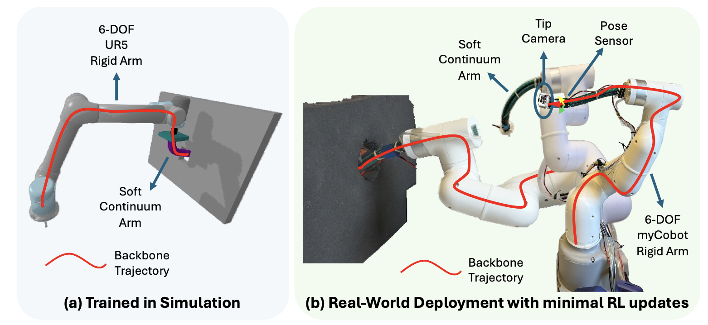
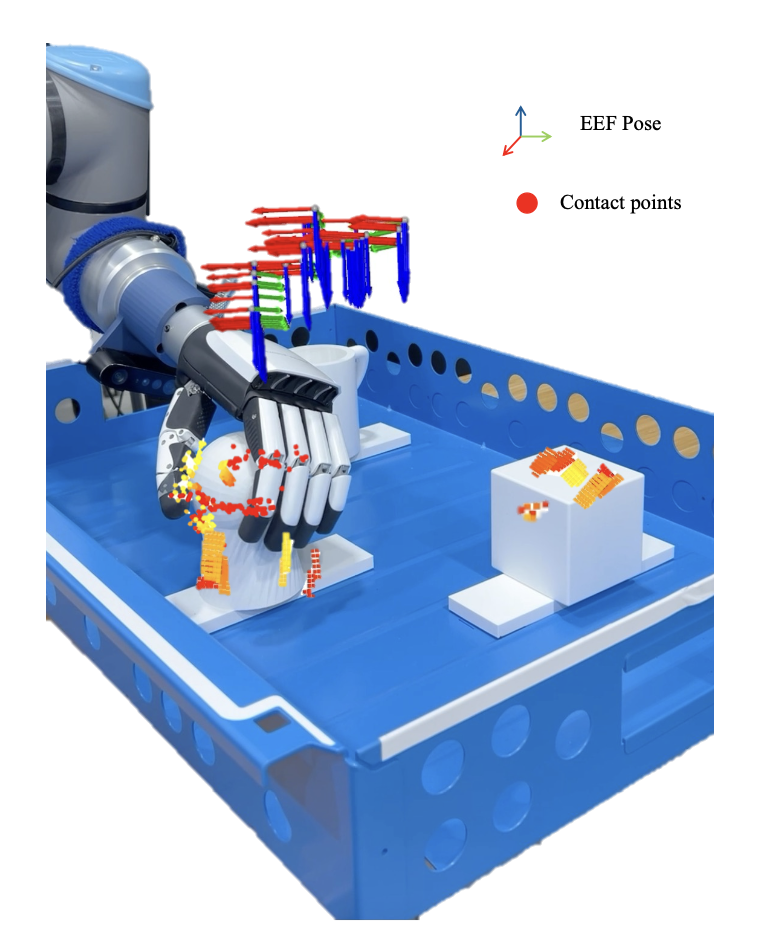
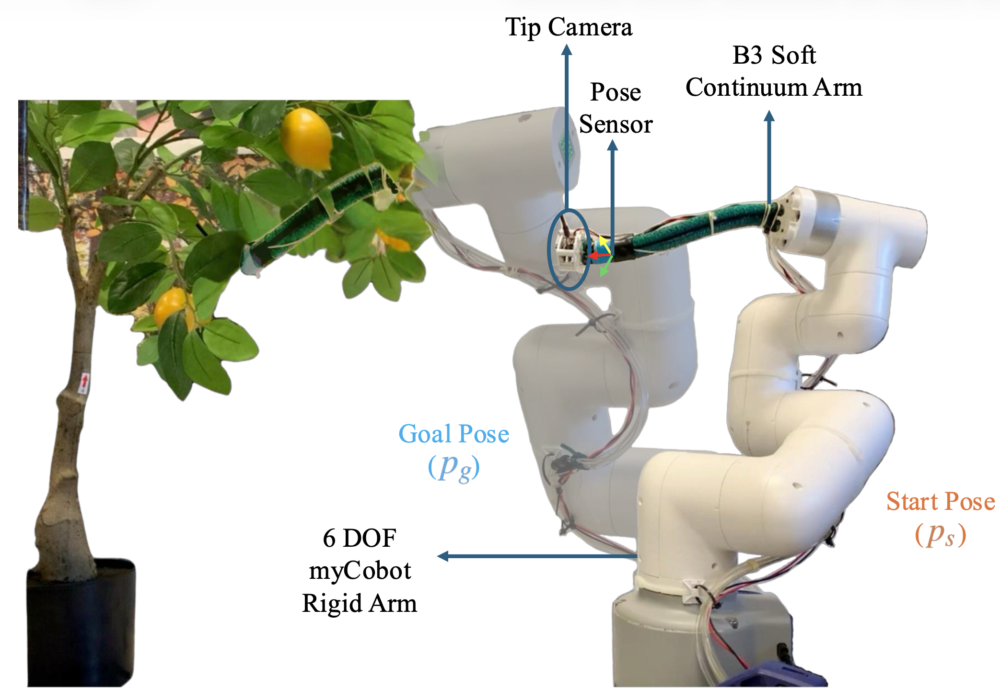
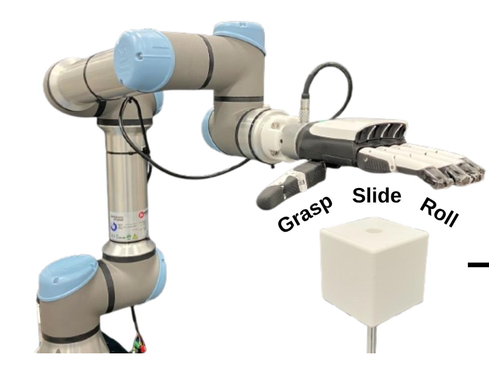
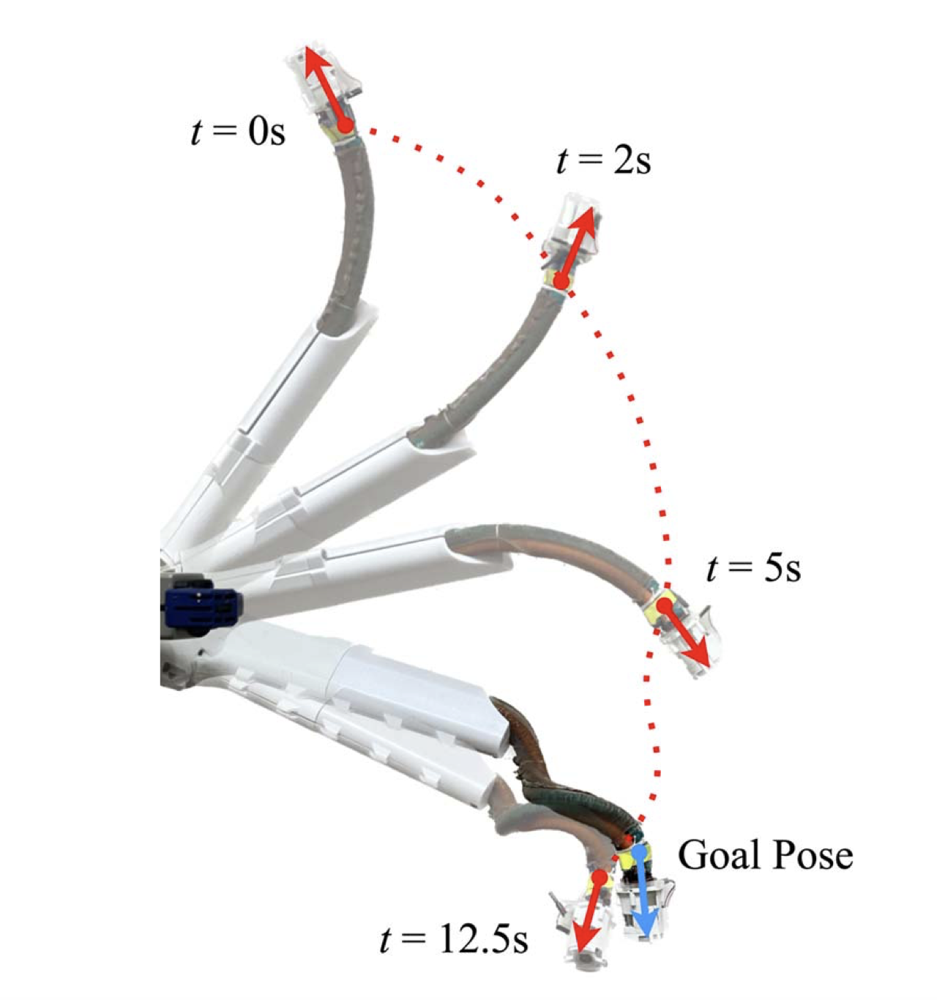
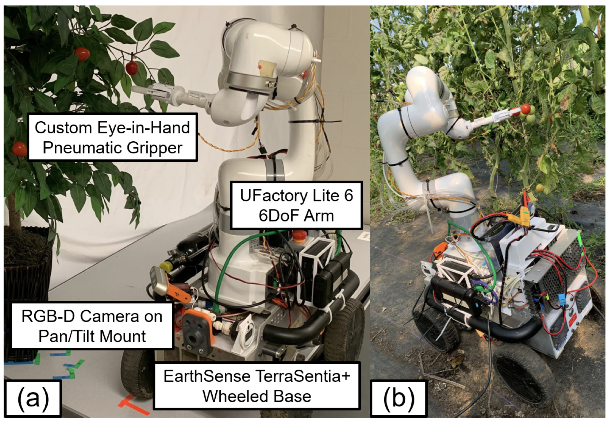

|
Shivani Kamtikar I am a Ph.D. candidate in Computer Science at the University of Illinois Urbana‑Champaign (UIUC). I work in the Distributed Autonomous Systems Laboratory (DASLab) with Prof. Girish Chowdhary. I was an Applied Scientist co-op at Amazon Robotics where I worked with Prof. Taskin Padir and Dr. Josh Migdal. I received my MSCS from UIUC in 2022. My master's thesis was Visual Servoing for Pose Control of Soft Continuum Arms. Previously, I was a research intern at the University of Notre Dame with Prof. Zhiyong Zhang. I got my BTech from Pune University, India. I'm the Director for GradSWE @ UIUC 2025. Outside research, I enjoy hiking, traveling, painting, reading, and growing a small jungle of houseplants! |

|
{kind=link}
ResearchMy research lies at the intersection of Robotics, Computer Vision, and Machine Learning. I work on developing learning-based methods for manipulation with soft and hybrid robotic arms, focusing on dexterous control in cluttered and unstructured environments. I also work on tactile‑centric policies for manipulation, enabling vision‑free exploration and object reconstruction , for both rigid arms and anthropomorphic hands. This work finds use in many applications such as autonomous harvesting, human assistive devices, medical imaging, underwater exploration, manufacturing and more! |
Publications
|
 |
THREAD: Trajectory Planning for Hybrid Rigid-Soft Manipulators with Environment-Aware Diffusion.
Shivani Kamtikar, Pranav Asthana, Naveen Kumar Uppalapati, Girish Krishnan, Girish Chowdhary Under Review We present the first ever diffusion-based generative planner for feasible backbone trajectories of hybrid soft-rigid manipulators, conditioned on scene geometry and goal constraints. |
|
 |
TACTFUL: Tactile-Driven Exploration For Object Localization and
Identification in Confined Environments
Shivani Kamtikar, Chung Hee Kim, Camilla Tabasso, Tye Brady, Josh Migdal, Taskin Padir Under Review We present a vision-free framework that enables a multi-fingered robot to autonomously explore confined workspaces, discover objects through contact, and identify them via tactile reconstruction |
|
 |
HyReach: Vision-Guided Hybrid Manipulator Reaching in
Unseen Cluttered Environments
Shivani Kamtikar, Kendall Koe, Justin Wasserman, Ben Walt, Samhita Marri, Naveen Kumar Uppalapati, Girish Krishnan, Girish Chowdhary Soft Robotics, 2026 paper project page We present real-time, vision-guided hybrid manipulation frame-work that enables reliable object reaching in cluttered, unstructured, and previously unseen environments. |
|
 |
Grasp, Slide, Roll: Comparative
Analysis of Contact Modes for Tactile-Based Shape Reconstruction
Chung Hee Kim, Shivani Kamtikar, Tye Brady, Taskin Padir, Josh Migdal IEEE International Conference on Robotics and Automation (ICRA), 2026 paper We present a study on how different contact modes affect object shape reconstruction using a tactile-enabled dexterous gripper. |
|
 |
Learning Position and Orientation Control for a Hybrid Rigid-Soft Manipulator
Kendall Koe, Samhita Marri, Benjamin Walt, Shivani Kamtikar, Naveen Kumar Uppalapati, Girish Krishnan, Girish Chowdhary Journal of Mechanisms and Robotics (JMR), 2025 paper We present a position and orientation controller for a hybrid rigid-soft manipulator arm. |
|
 |
Precision Harvesting in Cluttered Environments: Integrating End Effector Design with Dual Camera Perception
Kendall Koe, Poojan Kalpeshbhai Shah, Benjamin Walt, Jordan Westphal, Samhita Marri, Shivani Kamtikar, James Seungbum Nam, Naveen Kumar Uppalapati, Girish Krishnan, Girish Chowdhary IEEE International Conference on Robotics and Automation (ICRA), 2025 paper Precision harvesting of fruits in cluttered environments. |
|
|
Visual Servoing for Pose Control of Soft Continuum Arm in a Structured Environment
Shivani Kamtikar, Samhita Marri, Ben Walt, Naveen Kumar Uppalapati, Girish Krishnan, Girish Chowdhary IEEE RA-L & IEEE RoboSoft, 2022 (oral presentation) paper A deep learning-based visual servoing framework enabling robust 3D positioning of soft continuum arms, achieving sub-2 cm translation error and sub-0.25 rad rotation error in structured settings. |
Patents |
|
|
System for Translating Indian Sign Language into a Common Language and a Method Therefore
Shivani K. Kamtikar, Esha Gavali, Ayeshatasnim Hannure, Urvi Lendhe, Dr. Anagha Kulkarni The Patent Office, Government Of India certificate |
ContactYou can email me at: skk7 {at} illinois {dot} edu |
| Template adapted from Jon Barron. |